Sketches

Quality IKEA bowl from the thrift store


My extremely high tech way of estimating the curve of the bowl

Figuring out how big each layer can be
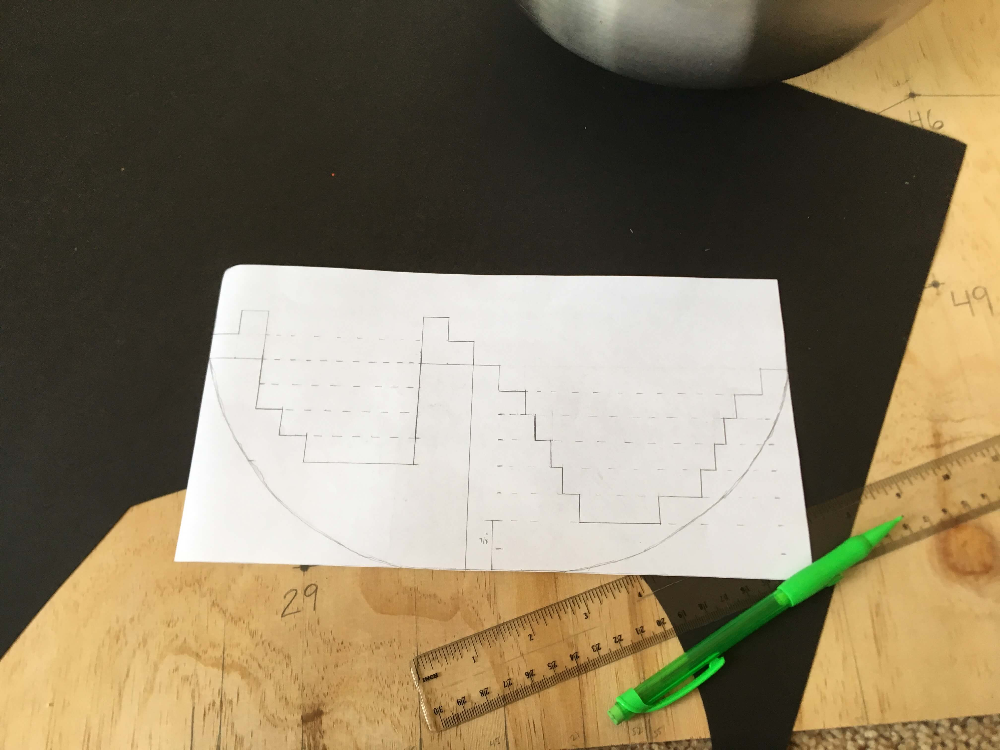Sketching out the shapes of the layers
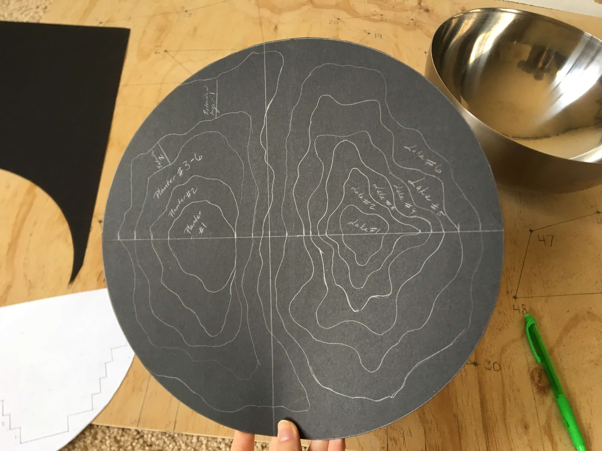Cutting out the layers and tracing them onto paper

 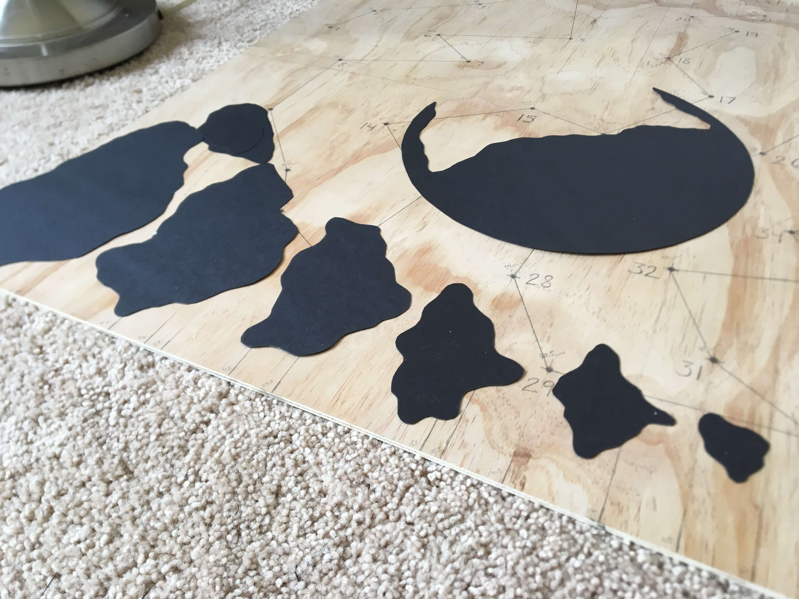
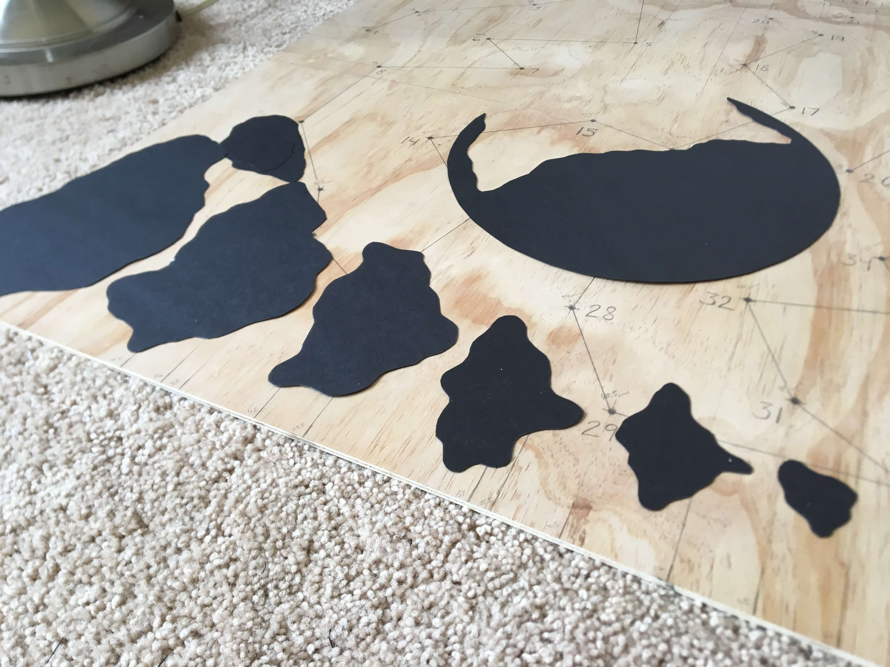
Tracing onto 1/2 inch foam board and cutting out each layer


Taping the edges to make them a little more smooth


Hoping Mold Release will make it easier to get the concrete out of a metal bowl

Ready to start pouring
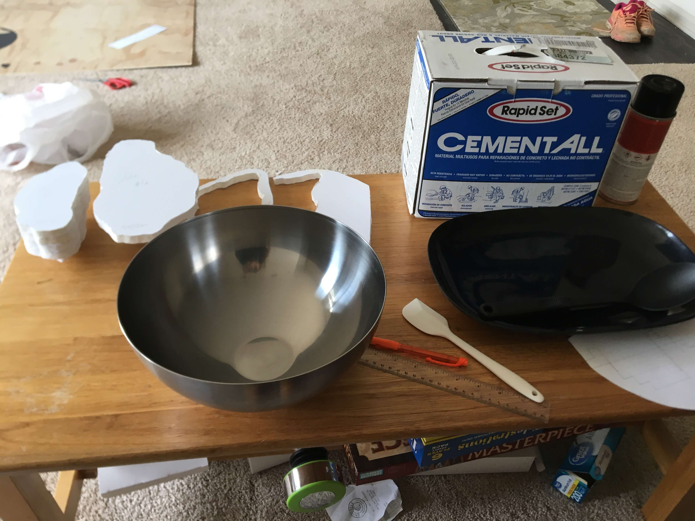 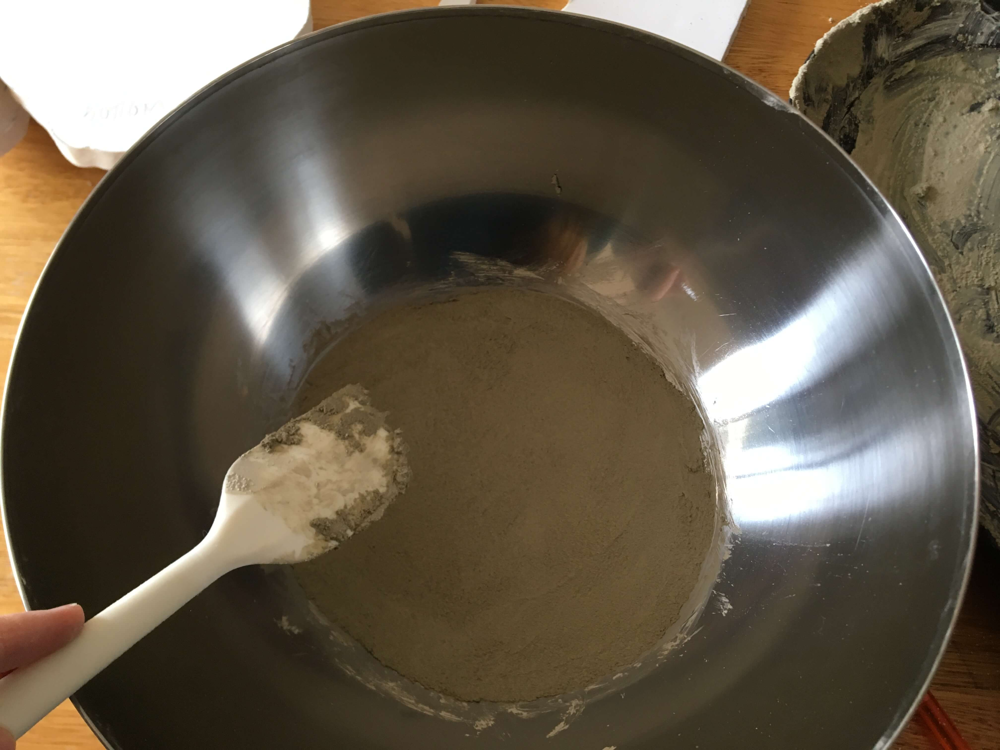 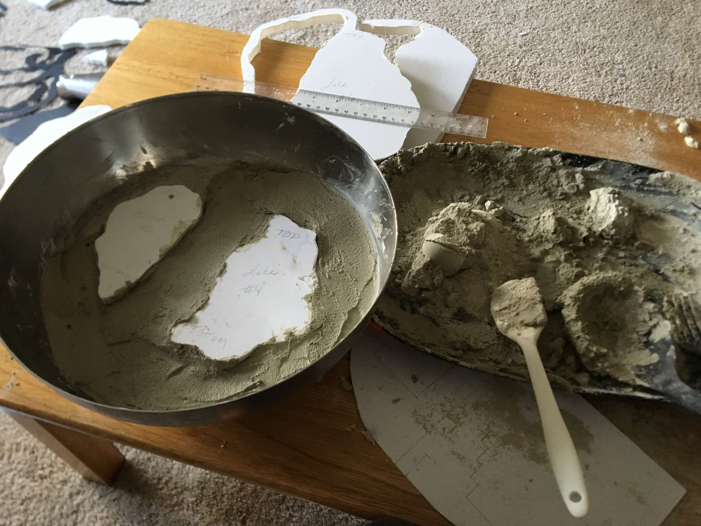
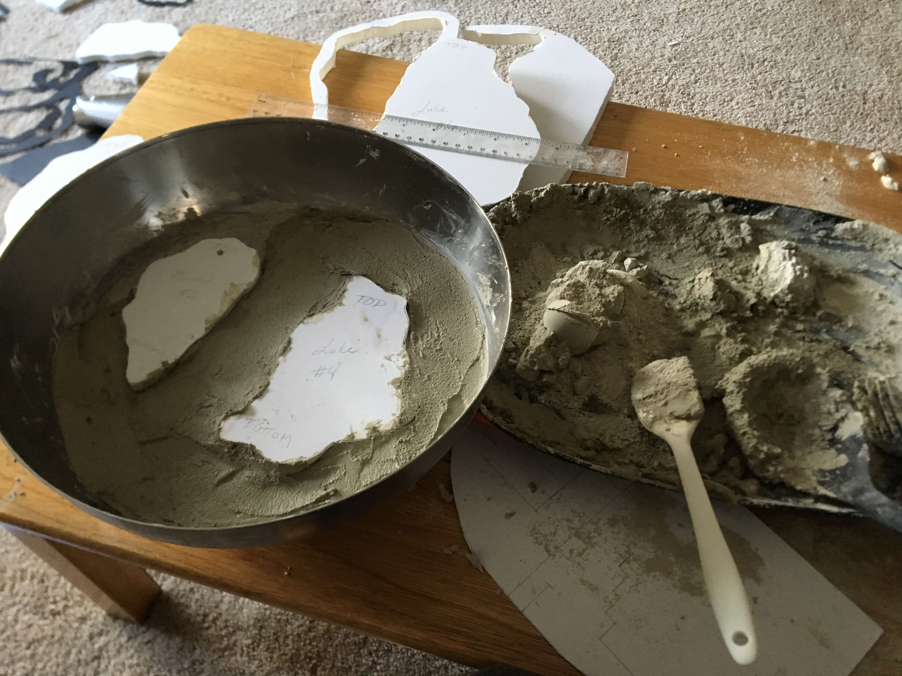
Took longer than expected - it always does.

Leaving to set for 24 hours

Taking out the foam layers

Didn't have any acetone, but nail polish remover worked pretty well to break down the foam a little

RIP top layer. Broke off when I was pulling out a foam layer

Wish I hadn't taped the edges, the foam is easy to get out but the tape is a pain to remove

I think the concrete wasn't quite wet enough when I poured it, the layers looked a bit chunky and there were a few too many air pockets between the layers. I wet down the edges and went over them with fresh concrete to fill in the gaps. It also helped smooth the edges a bit and covered the pieces of tape I didn't manage to get off

Edges fully covered

Time to try to get the form out of the bowl. Started by turning it over and hitting it with a mallet. Didn't really work and I accidentally cracked off part of the top layer

Realized I could pour hot water over the bowl to make the metal expand and release the form. Worked brilliantly with a satisfying *thunk*

Repairing the cracked layer
 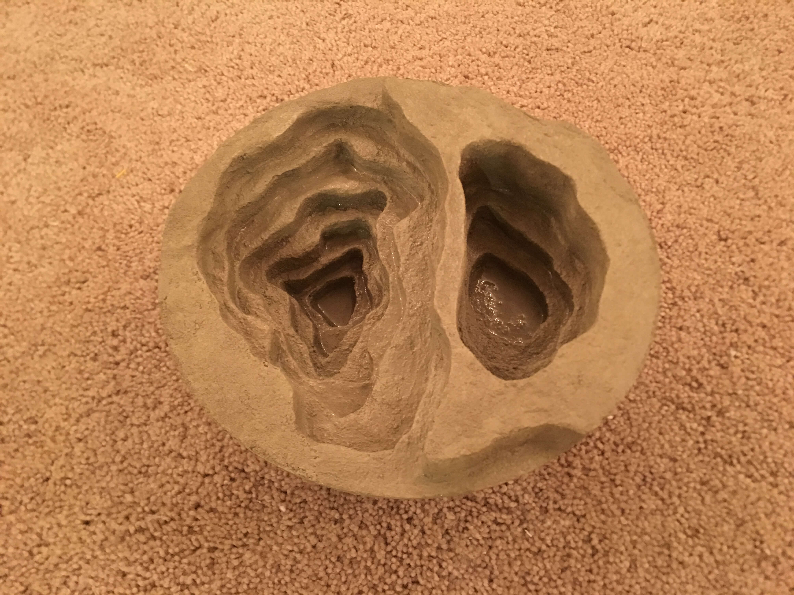
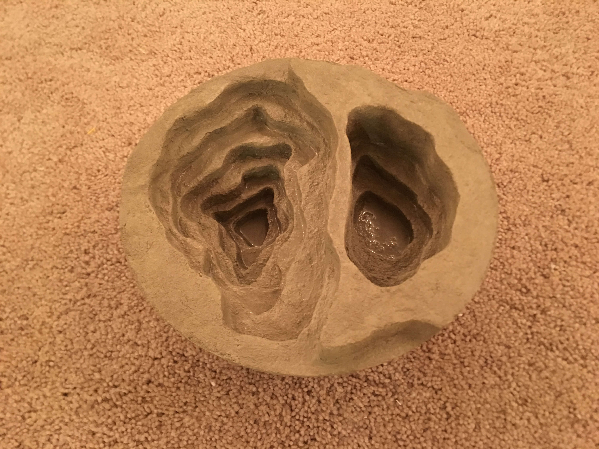
RIP living room. Again. My poor roommate.
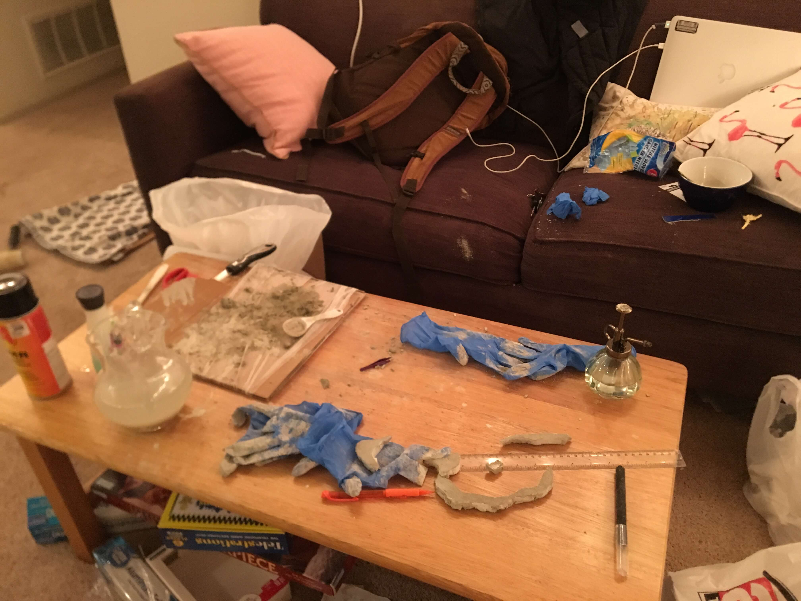Going to try to reserect the detatched top layer

It livessss


After letting it set for the night

The planter section ended up being a little closer to the lake than I would've wanted so I added a little more definition to the top 3 layers to separate them a bit more


Don't want the concrete to leach into the soil so I sprayed Waterguard in the planter
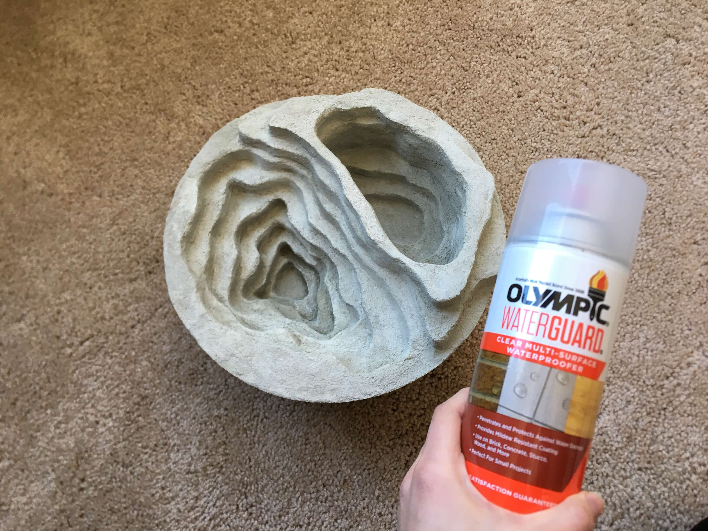 2019 Sonia Szeton | All Rights Reserved
2019 Sonia Szeton | All Rights Reserved